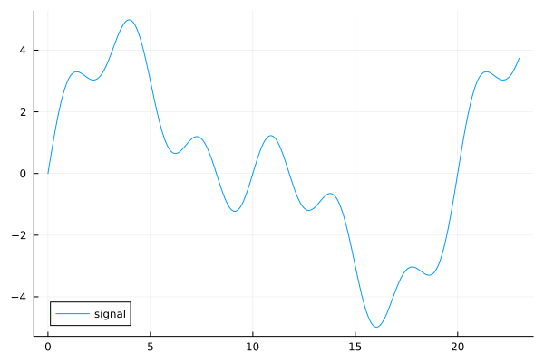
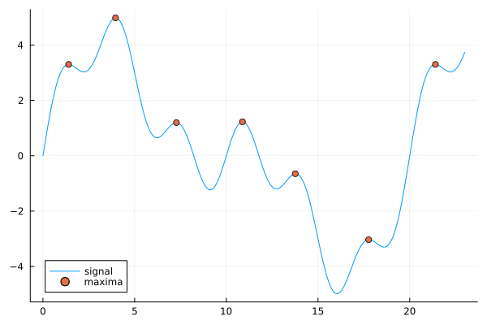

Peaks.jl
Peaks.jl is a library for finding peaks (i.e. local maxima and minima) and peak characteristics (e.g. how prominent or wide are peaks, etc) in vector (1D) data signals.
Installation
Peaks.jl can be installed from the Julia REPL by running
] add Peaks Resolving package versions...
Updating `~/.julia/environments/v1.11/Project.toml`
[18e31ff7] + Peaks v0.5.3
Updating `~/.julia/environments/v1.11/Manifest.toml`
[18e31ff7] + Peaks v0.5.3
⌅ [aea7be01] + PrecompileTools v1.2.1
[21216c6a] + Preferences v1.5.0
[3cdcf5f2] + RecipesBase v1.3.4
[fdea26ae] + SIMD v3.7.1
[ade2ca70] + Dates v1.11.0
[de0858da] + Printf v1.11.0
[fa267f1f] + TOML v1.0.3
[4ec0a83e] + Unicode v1.11.0
Info Packages marked with ⌅ have new versions available but compatibility constraints restrict them from upgrading. To see why use `status --outdated -m`Getting started
Finding peaks
To find the peaks in your data you can use the findmaxima function, which returns a NamedTuple with fields for each calculated peak characteristic (indices, heights) and a reference to the data.
julia> indices, heights = findmaxima(y)(indices = [36, 100, 183, 273, 345, 445, 536], heights = [3.300118034348511, 4.982232717207901, 1.197072463435926, 1.2276270625137882, -0.6496226560177698, -3.0322485466891145, 3.300118034348519], data = [0.0, 0.1632851160646655, 0.32610451181030864, 0.4879949200150502, 0.6484979658187734, 0.8071625784012266, 0.9635473614762452, 1.1172229092385426, 1.2677740547092151, 1.4148020378099078 … 3.2394249315275934, 3.2820555214196987, 3.3284358209806952, 3.3784081950151283, 3.4317863042827303, 3.4883561669665792, 3.5478773815030995, 3.6100845038112075, 3.674688571077937, 3.7413787634226736])
When the peaks are plotted over the data, we see that all the local maxima have been identified.
Peak characteristics
Peaks have various characteristics, including height, prominence, and width. Peaks.jl exports functions for finding each characteristic: peakheights, peakproms, peakwidths:
julia> indices, proms = peakproms(indices, y)([36, 100, 183, 273, 345, 445, 536], [0.2678694876593948, 4.982232717207901, 0.5474498074181589, 2.4552541250275763, 0.5474498074181591, 0.2678694876593921, 0.26786948765940455])julia> indices, widths, edges... = peakwidths(indices, y, proms)([36, 100, 183, 273, 345, 445, 536], [17.62631562198532, 111.3881252794683, 24.143545188509734, 44.44393283928167, 23.091125504863612, 18.893643387694567, 17.626315621985214], [28.48833894440662, 18.671388334872134, 169.46890657137365, 251.0, 332.5310934286264, 436.9917020459134, 528.4883389444067], [46.11465456639194, 130.05951361434043, 193.61245175988338, 295.4439328392817, 355.62221893349, 455.885345433608, 546.1146545663919])
Mutating bang ('!') functions are available (i.e. peakproms!, etc.) when allocations are a concern.
Peaks NamedTuple & pipable API
There are Peaks.jl functions that bundle the peaks, peak characteristics, and signal into a convenient NamedTuple:
julia> pks = findmaxima(y);julia> pks = peakproms(pks);julia> pks = peakwidths(pks)(indices = [36, 100, 183, 273, 345, 445, 536], heights = [3.300118034348511, 4.982232717207901, 1.197072463435926, 1.2276270625137882, -0.6496226560177698, -3.0322485466891145, 3.300118034348519], data = [0.0, 0.1632851160646655, 0.32610451181030864, 0.4879949200150502, 0.6484979658187734, 0.8071625784012266, 0.9635473614762452, 1.1172229092385426, 1.2677740547092151, 1.4148020378099078 … 3.2394249315275934, 3.2820555214196987, 3.3284358209806952, 3.3784081950151283, 3.4317863042827303, 3.4883561669665792, 3.5478773815030995, 3.6100845038112075, 3.674688571077937, 3.7413787634226736], proms = [0.2678694876593948, 4.982232717207901, 0.5474498074181589, 2.4552541250275763, 0.5474498074181591, 0.2678694876593921, 0.26786948765940455], widths = [17.62631562198532, 111.3881252794683, 24.143545188509734, 44.44393283928167, 23.091125504863612, 18.893643387694567, 17.626315621985214], edges = [(28.48833894440662, 46.11465456639194), (18.671388334872134, 130.05951361434043), (169.46890657137365, 193.61245175988338), (251.0, 295.4439328392817), (332.5310934286264, 355.62221893349), (436.9917020459134, 455.885345433608), (528.4883389444067, 546.1146545663919)])
Mutating functions are also available for the NamedTuple functions; the vectors within the NamedTuple are mutated and re-used in the returned tuple. The NamedTuple functions can also be chained/piped:
julia> pks = findmaxima(y) |> peakproms!(;strict=false) |> peakwidths!(; max=100)(indices = [36, 183, 273, 345, 445, 536], heights = [3.300118034348511, 1.197072463435926, 1.2276270625137882, -0.6496226560177698, -3.0322485466891145, 3.300118034348519], data = [0.0, 0.1632851160646655, 0.32610451181030864, 0.4879949200150502, 0.6484979658187734, 0.8071625784012266, 0.9635473614762452, 1.1172229092385426, 1.2677740547092151, 1.4148020378099078 … 3.2394249315275934, 3.2820555214196987, 3.3284358209806952, 3.3784081950151283, 3.4317863042827303, 3.4883561669665792, 3.5478773815030995, 3.6100845038112075, 3.674688571077937, 3.7413787634226736], proms = [0.2678694876593948, 0.5474498074181589, 2.4552541250275763, 0.5474498074181591, 0.2678694876593921, 0.26786948765940455], widths = [17.62631562198532, 24.143545188509734, 44.44393283928167, 23.091125504863612, 18.893643387694567, 17.626315621985214], edges = [(28.48833894440662, 46.11465456639194), (169.46890657137365, 193.61245175988338), (251.0, 295.4439328392817), (332.5310934286264, 355.62221893349), (436.9917020459134, 455.885345433608), (528.4883389444067, 546.1146545663919)])
Be aware that the NamedTuple functions allocate more memory than the functions with direct/explicit arguments. If maximum performance is needed, mutating functions (e.g. peakproms!, etc) and/or the direct, non-NamedTuple methods are a better choice.
Plotting
The peaks, prominences, and widths can be visualized all together using a Plots.jl recipe plotpeaks:
using Plots
plotpeaks(t, y, indices; show_prominences=true, show_widths=true)or using a Makie.jl recipe (with a different function name to avoid name conflicts):
using CairoMakie
peaksplot(t, y, indices; show_prominences=true, show_widths=true)